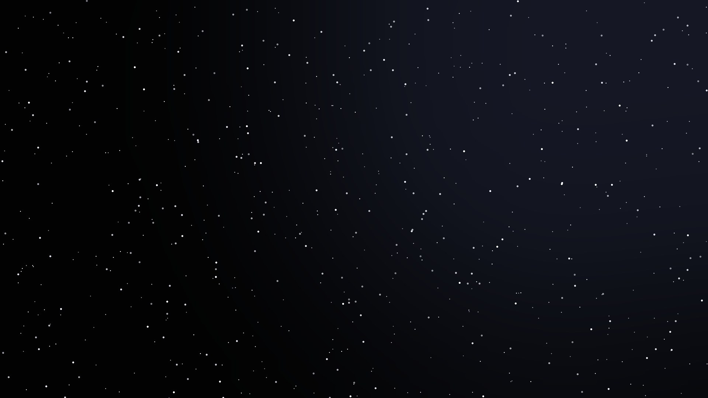
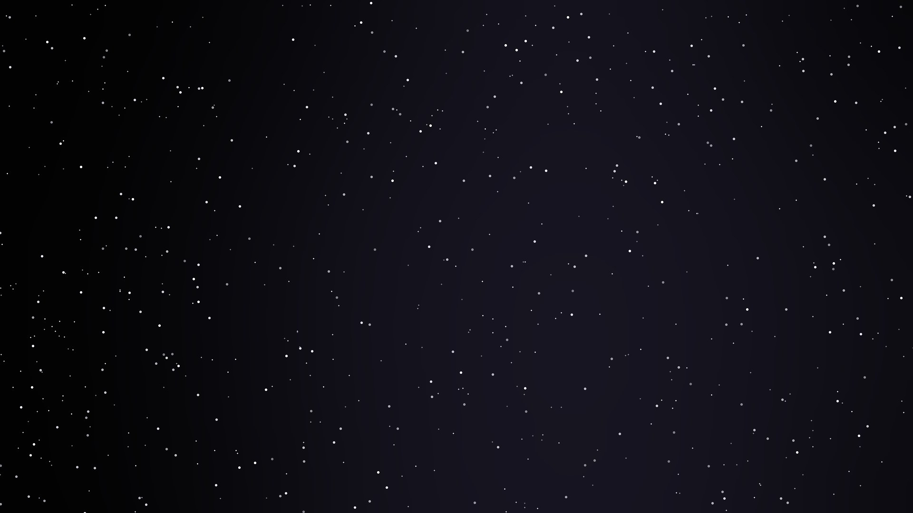
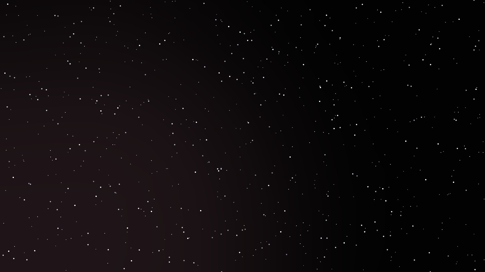
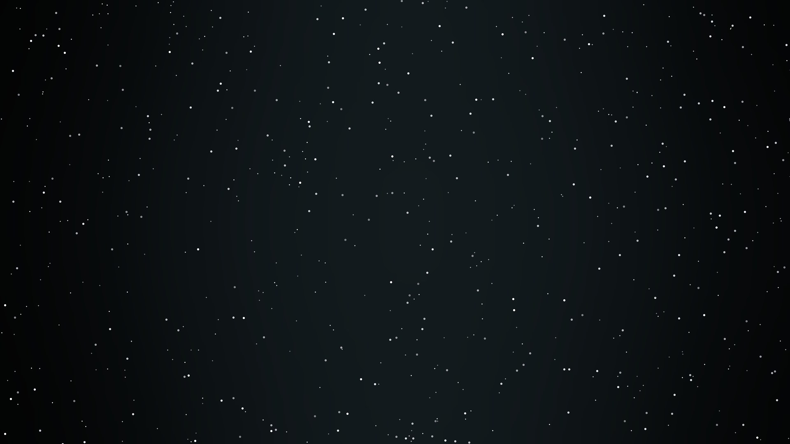
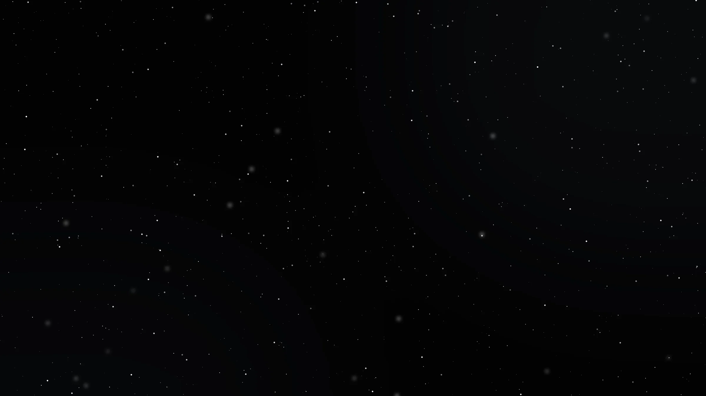
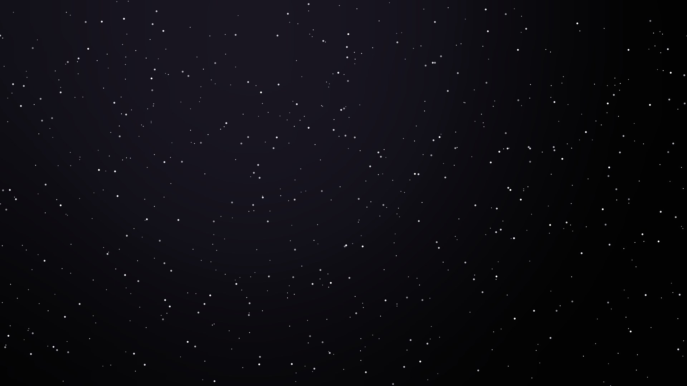

GDG Stanford × Red Bull Basement · Belto Inc.
SpaceBank.
Banking for a multiplanet species.
Built with Gemini & Google AI Studio

The problem
Money stops at the atmosphere.
Humanity is going multiplanet. Banking isn't. Today's rails assume one planet, instant links, and a branch nearby — cross-planetary value transfer simply doesn't exist.

Why now
The space economy is compounding.
$1.8T
Space economy by 2035 (from ~$630B in 2023).
~9×
Drop in launch cost per kg — and still falling.
$190T
Cross-border payment volume today.
WEF & McKinsey (2024); cross-border volume per industry estimates.

Solution
One account that follows you off-world.
Hold, send, and settle value across Earth, orbit, the Moon, and Mars — built for latency and distance, not fighting them.
Belto's orbital software is the wedge today; SpaceBank is the financial layer it grows into.

How it works
Value crosses the void — as light.
01Originate in orbit
A transfer lifts off from a SpaceBank relay in Mars orbit.
02Optical laser link
Carried across deep space to a relay in Earth orbit — no cables.
03Settle on Earth
Lands in Earth's banking rails — built for the delay.

What we built
A working bank, run by AI.
Built with Gemini and Google AI Studio, on Cloud Run — live, not slideware.
Space Bank AI
A Gemini agent with live access to your accounts — it computes net worth, finds spending patterns, and executes deposits, transfers & vault stores from plain language.
Latency-aware transfers
Sends fly as light to Earth, orbit, the Moon or Mars — each with a real per-distance countdown. The settlement thesis, built.
Multi-planet accounts
Accounts bound to named relays — Lagrange L1, Luna Core, Ares Vault Node — with an Earth-bank on-ramp.
AI-valued orbital vault
Password-locked custody for keys, records & model weights — appraised by sovereign AI and rolled into your net worth, across the universe.

Revenue on Earth — today
We don't wait for Mars to earn.
Global accounts
Multi-currency accounts & fast cross-border transfers.
Mission treasury
Operating capital for launch, satellite & research teams.
Remote-site payments
Pay crews at launch sites and off-grid locations.
Orbital vault
Air-gapped key & record custody — security by distance.

Market
An Earth wedge into a frontier no one owns.
$625B
Cross-border payments revenue pool, 2025 — our beachhead.
$1.8T
Space economy by 2035 — the category we bank.
Monetize Earth-side payments now; become the default rail as space comes online.
Path to $1M ARR: ~30–40 space-sector teams on treasury + platform fees (~$25K ACV) — a sliver of the ~$630B space economy, no consumer scale required.
Industry cross-border revenue estimates (2025); WEF & McKinsey (2024).

Competition · Why us
Everyone assumes one planet.
Wise / SWIFT / banks
Own Earth cross-border — but built on instant links and a branch nearby. No concept of distance or delay.
Crypto & stablecoins
Borderless, but not latency-aware; assume always-on connectivity and earthbound validators.
Space-sector fintech
A handful touch mission payments — none are building cross-planetary settlement or an orbital footprint.
SpaceBank
The only account engineered for distance — optical relays, settlement-by-light, and an orbital vault. Earth revenue today; the rail no one else is laying.

Business model
Four revenue lines.
Interchange & FX
Spread on spend and cross-border transfers.
Treasury yield
Net interest on operating balances.
Vault-as-a-service
Subscription for orbital custody.
Platform fees
API access for treasury, payroll & settlement.

Traction
Signed pilot revenue. Pulled, not pushed.
→Signed LOS · ~$100K pilot
Genesis Codes Inc. (USSF prime); active pilots with two orbital operators under NDA.
→3,000+ waitlist
Engineers and builders inbound at belto.world / belto.space — demand, not ad spend.
→Live & shipping
Public product live; AI-run prototype built and deployed in the 3-hour sprint.

Team · Belto Inc.
Runtime engineering × space systems.
Emil Shirokikh — Co-founder / CEO
- Built Belto's onboard-AI runtime end-to-end
- Radiation-performance white paper — Zenodo 2026, 1,000+ views
- NASA ARSET + EU Space Academy (EUSPA) training, 2026
- Ex-Capgemini — led $10M+ Mercedes-Benz program, 50 people
- Stanford GSB Ignite · UCR MBA · TU Stuttgart
Anna Atlasova — Co-founder
- Owns customer relations & business development
- 12 years in data analytics & project management
- Created a rocket-engineering course; launched a small rocket
- Ex-Amazon B2B · TU Munich MS · Stanford GSB Ignite
- BS Energy Engineering — propulsion, electronics, signal integrity, vacuum systems
Both founders full-time, in person daily in Menlo Park. Advisor: Anna Gong — Founder & CEO, Perx Technologies (AI customer-engagement SaaS, backed by Golden Gate Ventures); ex-Infor APJ VP.
The plan
Software first. Satellites second. The bank third.
Prove it in orbit
Phase 1
Belto AI on partner payloads
Launch SpaceBank
Phase 3
Financial layer: Earth → Mars
Money stays with regulated partners; identity, vault & settlement instructions ride Belto's network.

The ask
Raising $1.5M pre-seed.
12 months of runway to ship the licensed payments core, convert the waitlist to paying users, and reach $500K–$1M ARR.
50%Engineering & product
Two hires — payments infra and ML — plus core build.
25%Licensing & compliance
BaaS partner and money-movement licensing path.
25%GTM & operations
Waitlist conversion, pilots, and ground segment.
By month 12: payments license filed, 30+ paying space-sector teams, and 2 pilots converted to paid contracts.
support@belto.world · belto.space